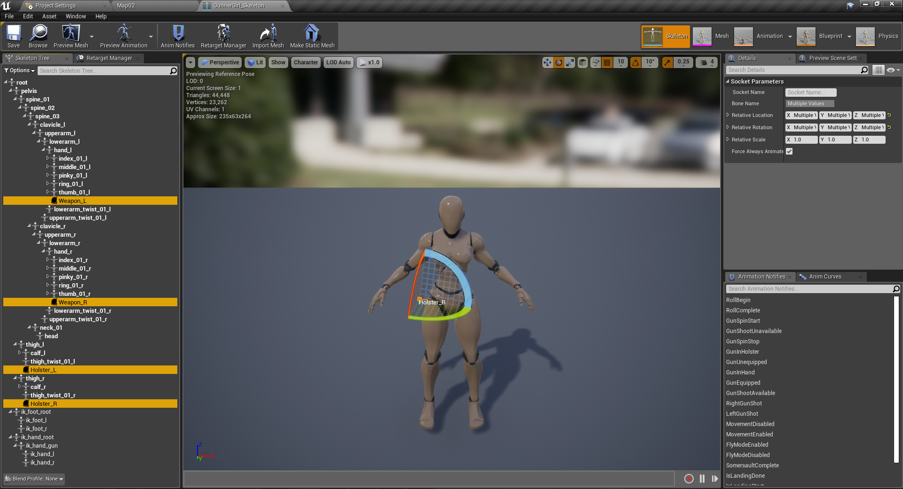

Female Shooter - User Guide
Preparing the sockets
As of version 1.3.0, the FemaleShooter template requires at least,
- 2 sockets to be used to hold the guns when it's being equipped
- 2 sockets to be used to store the guns when not used
By default, on the GunnerGirl_Skeleton, the names of the required sockets are set to,
- Weapon_L
(attached to hand_l) - Weapon_R
(attached to hand_r) - Holster_L
(attached to thigh_l) - Holster_R
(attached to thigh_l)

In practice however, you can actually name the sockets to whatever you need.
As of 1.3.0, the system relies on the value of the
As long as there are identifiers in your
You can also add any number of sockets as necessary according to the setting of the EquipmentSet that you are using.
See the Changing Equipments section of the Migration to 1.3.0 guide for more details on how work with the EquipmentSet.
Adding the sockets
To add the sockets to your skeleton, you can either,
- create each sockets one by one,
(Instructions can be found here) - or duplicate the sockets configuration used by the GunnerGirl_Skeleton and apply it to your character's skeleton.
(Instructions can be found here)
Feel free to use whichever method that works for you.
Once that's done, we will proceed with the list of functionalities that you can add from the Female Shooter template to your character.